年终总结—我们的2019
我们的工作 我们的生活 我们的2019
THE YEAR-END REVIEW
这一年，我们这样走过
年终总结
0
1
一至四月 | 五至八月 | 九至十二月 |
在新年逛吃逛喝后 三月我们又背起小书包回到了学校 电协每周的教学又井然有序的开始啦 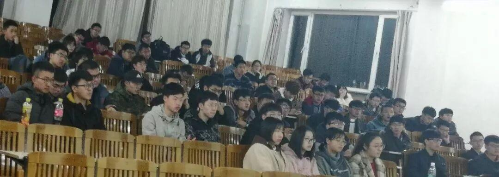 一、电协换届选举大会 参与竞选的会长候选人曹李钧，副会长候选人赵泉旭，团支书候选人孙泓玉皆全票通过😉 会长曹李钧 男 21岁 至今单身 有意者可以联系 二、Ambition战队新车发布会暨沈理电协礼物设计大赛展示会 这次借着礼物设计大赛展示会的四月风，我们有幸邀请到紫枫剧社、琴韵文学社、两大社团一起进行联谊活动！这是科技，文学，与艺术的交响乐！ 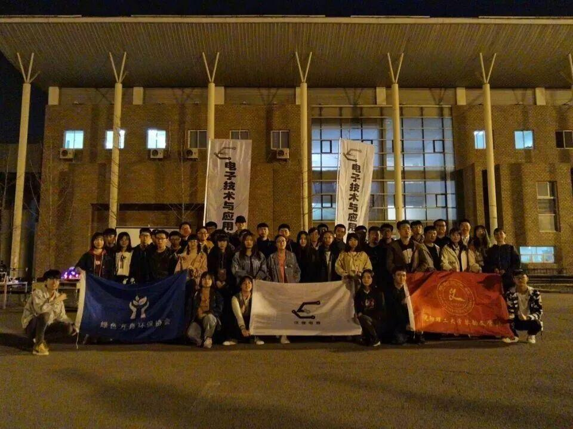 | ||
0
2
一至四月 | 五至八月 | 九至十二月 |
一、“电协杯”礼物设计大赛 十二支队伍晋级决赛 六支队伍获奖 视觉的盛宴源于科技与艺术的结合，感谢所有工作人员的悉心付出。 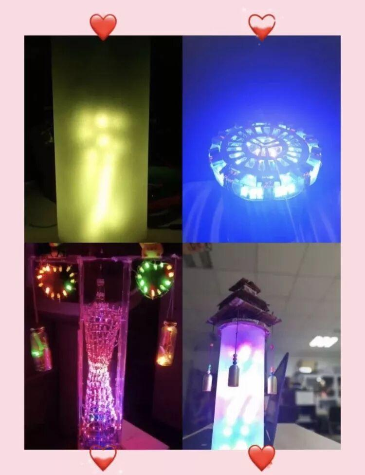 二、迎战Robomaster 五月份的末尾，准备了一年的Ambition踏上了去往北京赛场的路。因为热爱，不分昼夜；因为热爱，忘乎所有。 终于...晋级十六强，惜败淘汰赛，但虽败犹荣！Robomaster，明年再战! 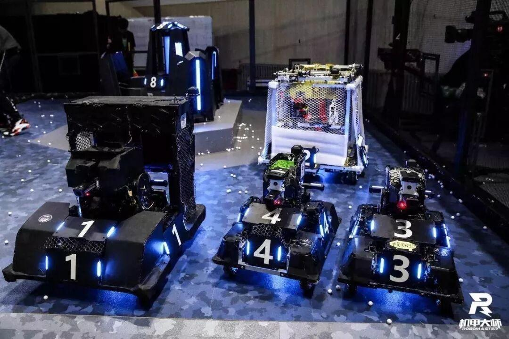 | ||
0
3
一至四月 | 五至八月 | 九至十二月 |
一、九月 新学期当然要招新啦~ 想要“引诱”大家进电协，必须要拿出我们的“宝物”啊！所以，九月二十五日，电协力量展示会来啦~一场场视觉的盛宴，为招新攒足了人气😌 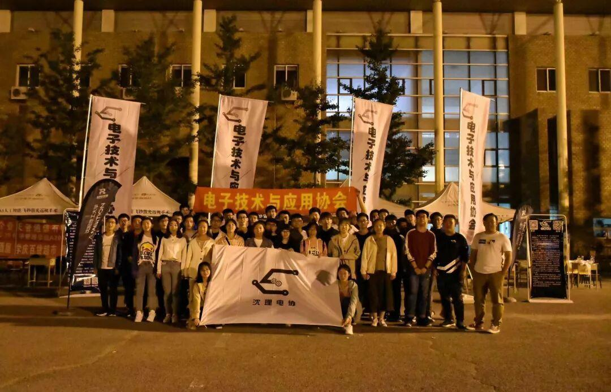 十月中旬，招新结束，有500多位小可爱加入我们哦~ 学弟填写报名表 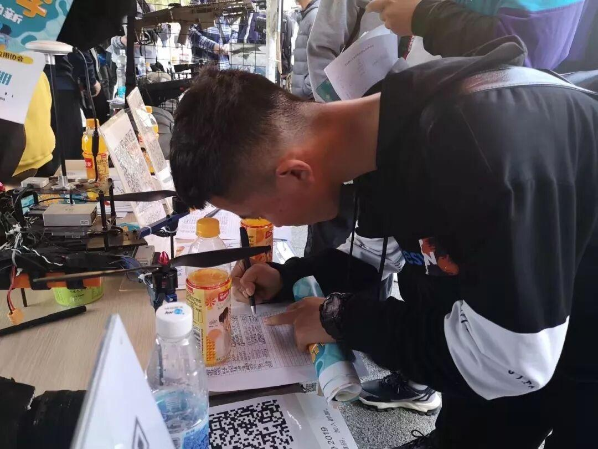 二、Robocon省赛—东大之战 10月26日至27日，2019年辽宁省普通高等学校本科大学生机器人竞赛成功举行。我校经学生组队申报，学院审核，我社团共有4支队伍成功参赛。 经过激烈的角逐和专家评委评审，我校有一只队伍获省二等奖，二支队伍获省三等奖！成功源于假期我们在吃吃喝喝，他们在实验室研究呀！ 我的红马甲好看吗？ 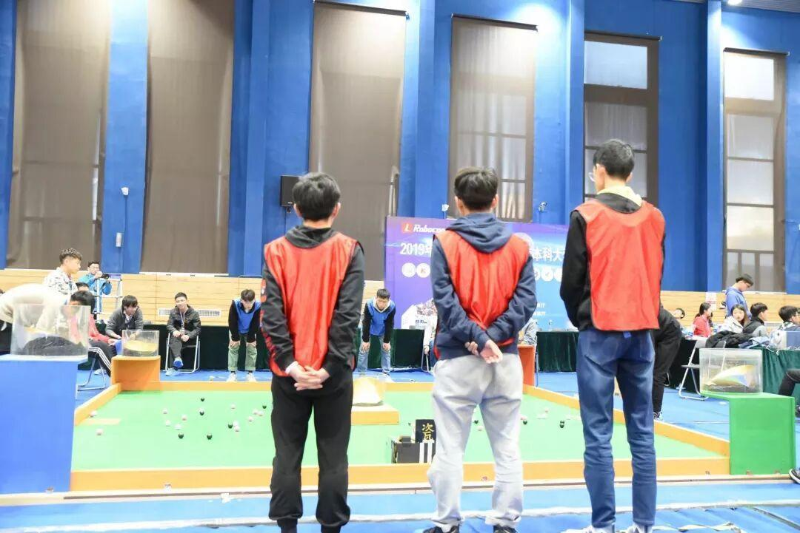 三、电协行政干事招新结束 这里有拼搏奋斗的紧张环境,也有温馨的氛围和真挚的友情!祝愿大家在电协度过快乐且充实的大学时光~ 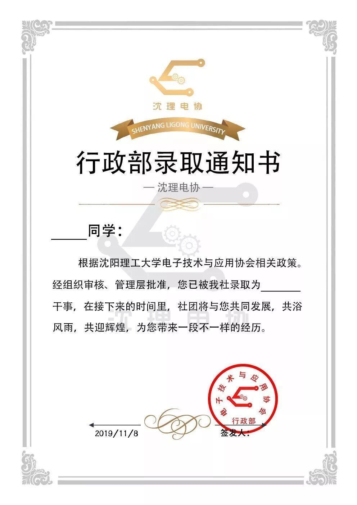 四、战队初次考核 十一月，战队开始招新啦，我们也进行了初次考核，通过考核的大家就成为了Ambition预备队员！ 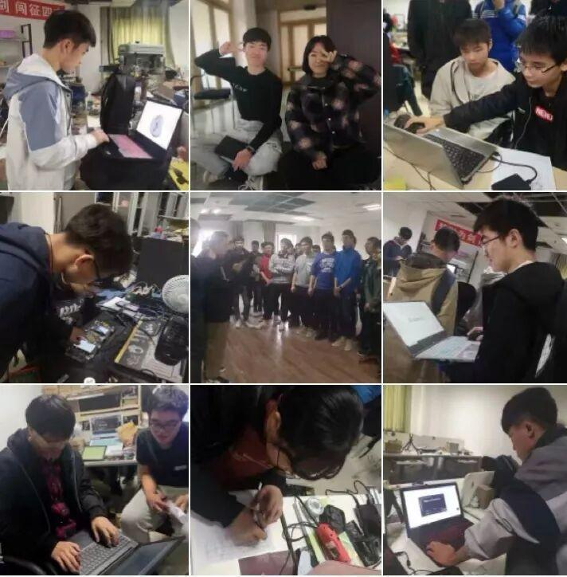 五、“理工杯”机器人竞赛 大家一起为第五届理工杯做准备，设计场地，组装搭建，修改规则。和参赛的学弟学妹一起熬夜修仙... 正在搭建的场地... 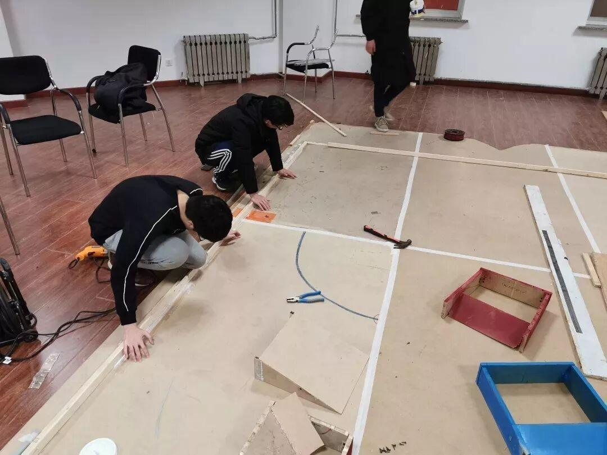 六、叮叮当，叮叮当，铃儿响叮当~ 据说有圣诞老人和驯鹿出没？ 苹果？贺卡？小礼品？ 大家纷纷表示：圣诞老人常来哈！ 是开心的圣诞节啊~ 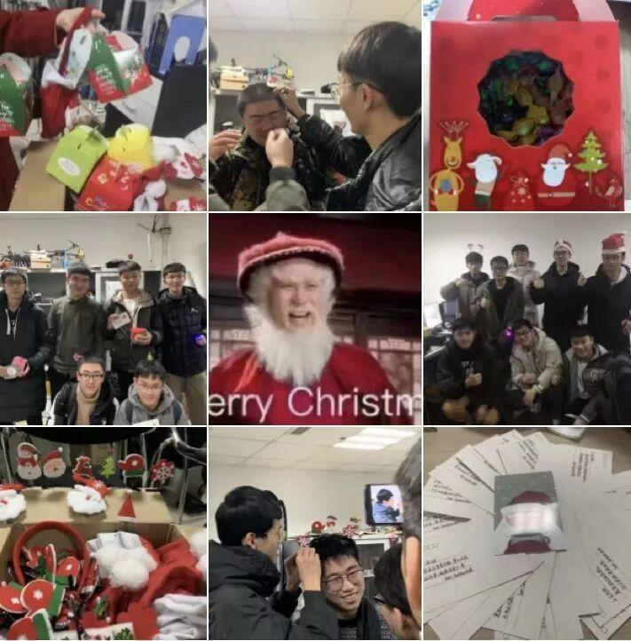 最后...2019的最后一天，我们要去复习了，期末，我不行了我还能肝！ | ||
排版：杜遇涵 文字：杜遇涵 图片：信息部   | ||